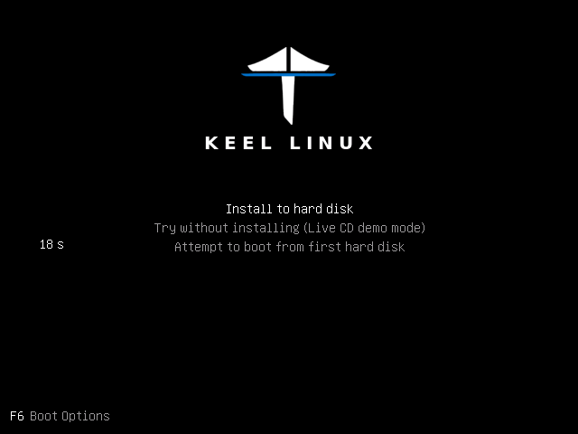
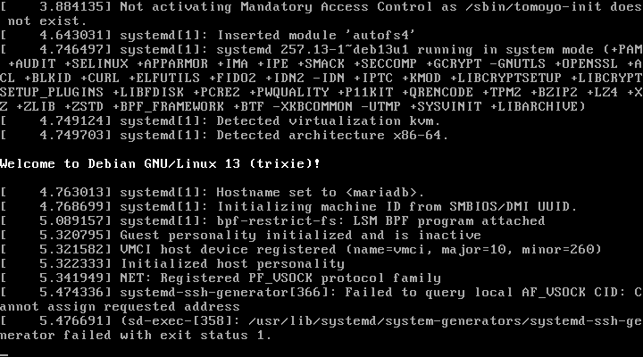
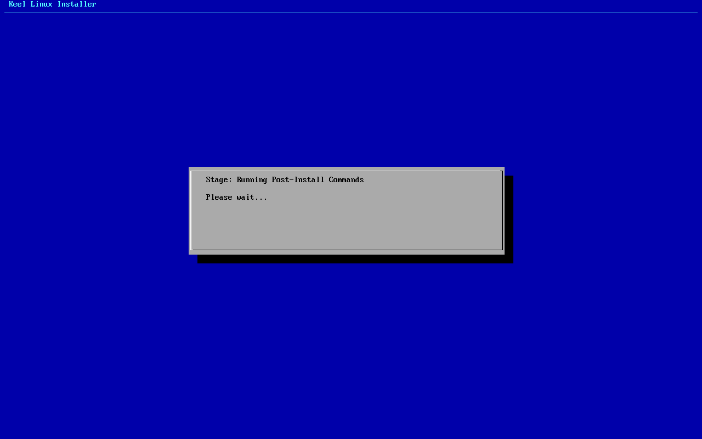
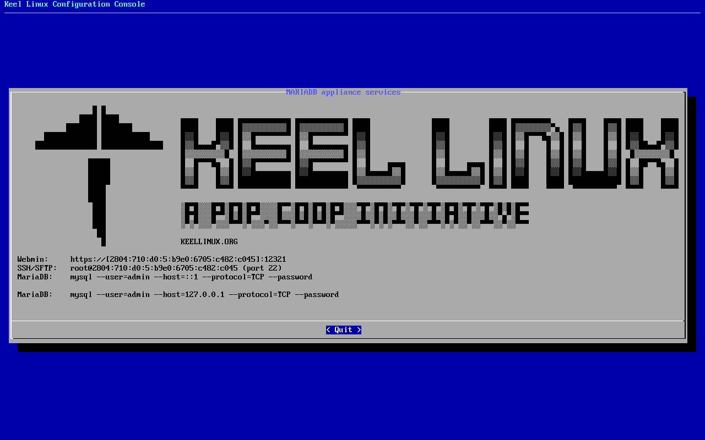

Appliances / Keel MariaDB
Keel MariaDBMariaDB 11.8
Keel release 19.0-12 · image debian-13-keel-mariadb_19.0-12_amd64.tar.zst
MariaDB database layer for Keel appliances, built on core. Compatible with TurnKey Linux appliances, and corresponding to the upstream appliance turnkeylinux-apps/mysql for the database half of what that appliance is.
Install
LXC template, for Proxmox VE
debian-13-keel-mariadb_19.0-12_amd64.tar.zst
sha256 b63dffe12176e98c5f4598e0a9c7785b0b91c9024ca424964cb71a5dea69f611
With the Keel index
keel-pve gets the signed index of the Keel templates and checks the template against it. The Templates dialog of the Proxmox web interface does not show Keel templates. Install keel-pve from the Keel archive, suite trixie-testing, as its README says. Then run these commands on the Proxmox node:
keel-pve update keel-pve download local keel-mariadb
With the file
- Download the template, its
.sha512and its.sha512.asc. - Check the signature. Then check the digest.
- Copy the template to
/var/lib/vz/template/cache/on the Proxmox node.
curl -fLO https://mirror.keellinux.org/images/debian-13-keel-mariadb_19.0-12_amd64.tar.zst -O https://mirror.keellinux.org/images/debian-13-keel-mariadb_19.0-12_amd64.tar.zst.sha512 -O https://mirror.keellinux.org/images/debian-13-keel-mariadb_19.0-12_amd64.tar.zst.sha512.asc curl -fLO https://archive.keellinux.org/keel-images-keyring.asc sqv --keyring keel-images-keyring.asc debian-13-keel-mariadb_19.0-12_amd64.tar.zst.sha512.asc debian-13-keel-mariadb_19.0-12_amd64.tar.zst.sha512 sha512sum -c debian-13-keel-mariadb_19.0-12_amd64.tar.zst.sha512 cp debian-13-keel-mariadb_19.0-12_amd64.tar.zst /var/lib/vz/template/cache/
If sqv prints E71DB9C3CA6AC18075395CC3ED3A709C4F3E2F3C, the signature is good. It also prints "Missing key" for the main key of the project. This is expected.
Make the container
pct create 200 local:vztmpl/debian-13-keel-mariadb_19.0-12_amd64.tar.zst --hostname mariadb \ --unprivileged 1 --features nesting=1 \ --net0 name=eth0,bridge=vmbr0,ip6=auto
Start the container and log in on its console as root. The first boot asks its questions there.
ISO, for a virtual or a real machine
debian-13-keel-mariadb_19.0-12_amd64.iso
sha256 a57da86d58e499f147261d8d3872faf9da671004b78066a1cf6b536d9e641533
curl -fLO https://mirror.keellinux.org/images/debian-13-keel-mariadb_19.0-12_amd64.iso -O https://mirror.keellinux.org/images/debian-13-keel-mariadb_19.0-12_amd64.iso.sha512 -O https://mirror.keellinux.org/images/debian-13-keel-mariadb_19.0-12_amd64.iso.sha512.asc curl -fLO https://archive.keellinux.org/keel-images-keyring.asc sqv --keyring keel-images-keyring.asc debian-13-keel-mariadb_19.0-12_amd64.iso.sha512.asc debian-13-keel-mariadb_19.0-12_amd64.iso.sha512 sha512sum -c debian-13-keel-mariadb_19.0-12_amd64.iso.sha512
Boot the machine from the ISO and install. The first boot of the installed system asks the same questions as the template.
The first boot
The questions of the first boot, of all the modes and roles. A node asks only those of its mode and role (the guides below show each one):
- Root Password password
- MariaDB password password
- Installation mode
- System Notifications
- Role of this node
- Invite a node
- Join a mesh
No password is copied between nodes: only the invite lines (decision 0076).
Services and ports
| Service | Port | Open to |
|---|---|---|
| mariadb | 3306/tcp | mesh |
Screenshots

user root, the root secret

after the login: the page the login opened

open /mysql/
Installation modes
Each column is one machine. Each row is one screen, in the order the machine showed it, with what the operator typed or chose. A secret is named, never shown.
Simple: one node
the LXC template, answered on the console (br1)
- 1
root password
the screen, as text
Connected to tty 1 Type <Ctrl+a q> to exit the console, <Ctrl+a Ctrl+a> to enter Ctrl+a itself press Enter within 5 s to answer first-boot questions Keel Linux Configuration Console KC9380 appliance services < Quit > Webmin: https://[2804:710:d0:5:be24:11ff:fe1f:5082]:12321SSH/SFTP: root@2804:710:d0:5:be24:11ff:fe1f:5082 (port 22)MariaDB: mysql --user=admin --host=::1 --protocol=TCP--passwordMariaDB: mysql --user=admin --host=127.0.0.1--protocol=TCP --password Keel Linux Configuration Console KC9380 appliance services < Quit > Webmin: https://[2804:710:d0:5:be24:11ff:fe1f:5082]:12321SSH/SFTP: root@2804:710:d0:5:be24:11ff:fe1f:5082 (port 22)MariaDB: mysql --user=admin --host=::1 --protocol=TCP--passwordMariaDB: mysql --user=admin --host=127.0.0.1--protocol=TCP --password Debian GNU/Linux 13 kc9380 tty1 kc9380 login: root Password: Keel Linux mariadb 19.0-trixie-amd64 IPv6 SSH: root@2804:710:d0:5:be24:11ff:fe1f:5082 Welcome to kc9380, Keel Linux 19.0 (Debian 13/Trixie) System information for Tue Nov 10 13:57:48 2026 (UTC+0000) System load: 10.04 Memory usage: 13.4% Processes: 30 Swap usage: 0.0% Usage of /: 14.4% of 7.78GB Networking not configured This system is not initialized yet: run keel-init to set it up. For Advanced commandline config run: confconsole For more info see: https://github.com/Keel-Linux/confconsole Linux kc9380 7.0.14-12-pve #1 SMP PREEMPT_DYNAMIC PMX 7.0.14-12 (2026-08-11T11:05Z) x86_64 === Keel Linux - First boot configuration Root Password Please enter new password for the root account. Choose how to set this password: Generate A strong random password (recommended) Manual Type my own password < OK >Generate A strong random password (recommended)Manual Type my own password Keel Linux - First boot configuration Root Password Please enter new password for the root account. Password Requirements - must be at least 8 characters long - must contain characters from at least 3 of the following categories: uppercase, lowercase, numbers, symbols < OK >x
typed:
(the root secret) - 2
root password
the screen, as text
******** Keel Linux - First boot configuration Root Password Confirm password Password Requirements - must be at least 8 characters long - must contain characters from at least 3 of the following categories: uppercase, lowercase, numbers, symbols < OK >x
typed:
(the root secret) - 3
db password
the screen, as text
******** Keel Linux - First boot configuration kc9380.pop.coop Domain name xxx The name this machine is reached by, with its domain, xx for example blog.example.org. It becomes the hostname, xx the name /etc/hosts answers for this machine, and the xx domain a TLS certificate is requested for in xx confconsole.xxxx Leave the field empty to keep the name the machine has. xxxx Fully qualified domain name:x <Apply>x >fqdn: /etc/keel/instance.yaml already declares the name, not written === Keel - First boot configuration MariaDB password Enter the password for the MariaDB administrative account. Choose how to set this password: Generate A strong random password (recommended) Manual Type my own password < OK >Generate A strong random password (recommended)Manual Type my own password Keel - First boot configuration MariaDB password Enter the password for the MariaDB administrative account. Password Requirements - must be at least 8 characters long - must contain characters from at least 3 of the following categories: uppercase, lowercase, numbers, symbols tq qu x< OK >x
typed:
(the db secret) - 4
db password
the screen, as text
******** Keel - First boot configuration MariaDB password Confirm password Password Requirements - must be at least 8 characters long - must contain characters from at least 3 of the following categories: uppercase, lowercase, numbers, symbols < OK >x
typed:
(the db secret) - 5
mode
the screen, as text
********>WARNING: option --ssl-verify-server-cert is disabled, because of an insecure passwordless login. MariaDB account 'admin' set from DB_PASS (24 characters), verified on [::1]:3306 === Keel Linux - First boot configuration Installation mode How this appliance is installed (decision 0028). You choose it once. Simple: one node. Everything is on this machine, with no mesh. Cloud simple: two nodes, a primary and a replica on a WireGuard mesh. The data follows the primary. When the primary stops, you promote the replica by hand. Cloud advanced: two data nodes and a witness, three sites, etcd of three. When the primary stops, the replica takes over by itself. Choose the same mode on every node of the set. Simple one node, no mesh Cloud simple two nodes, failover by hand Cloud advanced two nodes and a witness, failover by itself <Select>
typed:
<ret> - 6
mode
the screen, as text
Keel Linux - First boot configuration Installation mode < ok >x /etc/keel/instance.yaml: installation.mode: simple$ keel spec apply --system-only --non-interactive --skip-network --defer-certificate --spec/etc/keel/instance.yamlapply --system-only: /etc/inithooks.conf not read or writteninstance.hostname: unchanged (kc9380)instance.fqdn: unchanged (/etc/hosts maps kc9380 to kc9380.pop.coop)derived.monit: write /etc/keel/monit/keel-manifest.conf: 4 unit(s) and 4 probe(s) of mariadb (mode 0600): doneoverlays.vip: unchanged (disabled: keel-vip.service)overlays.crowdsec: unchanged (disabled: crowdsec.service, crowdsec-firewall-bouncer.service)overlays.etcd: unchanged (disabled: etcd.service)apply --system-only: 1 change(s), 0 failedkeel apply: exit 0, the spec was applied
typed:
<ret> - 7
alert email
the screen, as text
>keelfirstboot role: recorded database.server.role: standalone (mariadb) keelfirstboot cloud: Keel Cloud is not available yet: no key is asked, and this node runs standalone. It is offered once /etc/keel/cloud-endpoint names the service. === Keel Linux - First boot configuration System Notifications and Critical Security Alerts Enable local system notifications (root@localhost) to be forwarded to your regular inbox. Notifications include security updates and system messages. Email: <Enable> < Skip >x
typed:
admin@example.org - 8
- 9
- 10
web: webmin-mysql
typed:
open /mysql/
the ISO in a virtual machine (br1)
- 1
installer-boot

- 2
installer-boot

- 3
installer-boot

- 4
- 5
- 6
scheme

typed:
<ret> - 7
erase

typed:
<ret> - 8
- 9
installer-wait

- 10
reboot

typed:
y - 11
- 12
- 13
- 14
root password

typed:
(the root secret)<ret> - 15
- 16
- 17
- 18
- 19
- 20
- 21
- 22
- 23
firstboot-screen

typed:
<ret> - 24
- 25
firstboot-end

- 26
- 27
- 28
web: webmin-mysql

typed:
open /mysql/


Cloud simple: two nodes, failover by hand
| Step | Primary, BR1 | Replica, BR2 |
|---|---|---|
| 1 | root password the screen, as textConnected to tty 1 Type <Ctrl+a q> to exit the console, <Ctrl+a Ctrl+a> to enter Ctrl+a itself press Enter within 5 s to answer first-boot questions Keel Linux Configuration Console KC9383 appliance services < Quit > Webmin: https://[2804:710:d0:5:be24:11ff:fe5a:9b24]:12321SSH/SFTP: root@2804:710:d0:5:be24:11ff:fe5a:9b24 (port 22)MariaDB: mysql --user=admin --host=::1 --protocol=TCP--passwordMariaDB: mysql --user=admin --host=127.0.0.1--protocol=TCP --password Keel Linux Configuration Console KC9383 appliance services < Quit > Webmin: https://[2804:710:d0:5:be24:11ff:fe5a:9b24]:12321SSH/SFTP: root@2804:710:d0:5:be24:11ff:fe5a:9b24 (port 22)MariaDB: mysql --user=admin --host=::1 --protocol=TCP--passwordMariaDB: mysql --user=admin --host=127.0.0.1--protocol=TCP --password Debian GNU/Linux 13 kc9383 tty1 kc9383 login: root Password: Keel Linux mariadb 19.0-trixie-amd64 IPv6 SSH: root@2804:710:d0:5:be24:11ff:fe5a:9b24 Welcome to kc9383, Keel Linux 19.0 (Debian 13/Trixie) System information for Tue Nov 10 13:57:54 2026 (UTC+0000) System load: 10.20 Memory usage: 13.4% Processes: 30 Swap usage: 0.0% Usage of /: 14.4% of 7.78GB Networking not configured This system is not initialized yet: run keel-init to set it up. For Advanced commandline config run: confconsole For more info see: https://github.com/Keel-Linux/confconsole Linux kc9383 7.0.14-12-pve #1 SMP PREEMPT_DYNAMIC PMX 7.0.14-12 (2026-08-11T11:05Z) x86_64 === Keel Linux - First boot configuration Root Password Please enter new password for the root account. Choose how to set this password: Generate A strong random password (recommended) Manual Type my own password < OK >Generate A strong random password (recommended)Manual Type my own password Keel Linux - First boot configuration Root Password Please enter new password for the root account. Password Requirements - must be at least 8 characters long - must contain characters from at least 3 of the following categories: uppercase, lowercase, numbers, symbols < OK >x typed: | root password the screen, as textConnected to tty 1 Type <Ctrl+a q> to exit the console, <Ctrl+a Ctrl+a> to enter Ctrl+a itself press Enter within 5 s to answer first-boot questions Keel KC9384 appliance services < Quit > Webmin: https://[fd00:218:88:0:7d9b:bdb7:62ae:1891]:12321SSH/SFTP: root@fd00:218:88:0:7d9b:bdb7:62ae:1891 (port 22)MariaDB: mysql --user=admin --host=::1 --protocol=TCP--passwordWebmin: https://10.218.88.121:12321SSH/SFTP: root@10.218.88.121 (port 22)MariaDB: mysql --user=admin --host=127.0.0.1--protocol=TCP --password Keel Linux Configuration Console KC9384 appliance services < Quit > Webmin: https://[fd00:218:88:0:7d9b:bdb7:62ae:1891]:12321SSH/SFTP: root@fd00:218:88:0:7d9b:bdb7:62ae:1891 (port 22)MariaDB: mysql --user=admin --host=::1 --protocol=TCP--passwordWebmin: https://10.218.88.121:12321SSH/SFTP: root@10.218.88.121 (port 22)MariaDB: mysql --user=admin --host=127.0.0.1--protocol=TCP --password Debian GNU/Linux 13 kc9384 tty1 kc9384 login: root Password: Keel Linux mariadb 19.0-trixie-amd64 IPv6 SSH: root@2804:7f0:9880:6c3:6a84:ee2c:135:c927 IPv4 SSH: root@10.218.88.121 Welcome to kc9384, Keel Linux 19.0 (Debian 13/Trixie) System information for Tue Nov 10 14:00:08 2026 (UTC+0000) System load: 11.89 Memory usage: 12.4% Processes: 34 Swap usage: 0.0% Usage of /: 8.7% of 8.00GB IP address for eth0: 10.218.88.121 This system is not initialized yet: run keel-init to set it up. For Advanced commandline config run: confconsole For more info see: https://github.com/Keel-Linux/confconsole Linux kc9384 7.0.14-19-pve #1 SMP PREEMPT_DYNAMIC PMX 7.0.14-19 (2026-09-18T07:31Z) x86_64 === Keel Linux - First boot configuration Root Password Please enter new password for the root account. Choose how to set this password: Generate A strong random password (recommended) Manual Type my own password < OK >Generate A strong random password (recommended)Manual Type my own password Keel Linux - First boot configuration Root Password Please enter new password for the root account. Password Requirements - must be at least 8 characters long - must contain characters from at least 3 of the following categories: uppercase, lowercase, numbers, symbols < OK >x typed: |
| 2 | root password the screen, as text******** Keel Linux - First boot configuration Root Password Confirm password Password Requirements - must be at least 8 characters long - must contain characters from at least 3 of the following categories: uppercase, lowercase, numbers, symbols < OK >x typed: | root password the screen, as text******** Keel Linux - First boot configuration Root Password Confirm password Password Requirements - must be at least 8 characters long - must contain characters from at least 3 of the following categories: uppercase, lowercase, numbers, symbols < OK >x typed: |
| 3 | db password the screen, as text******** Keel Linux - First boot configuration kc9383.pop.coop Domain name xxx The name this machine is reached by, with its domain, xx for example blog.example.org. It becomes the hostname, xx the name /etc/hosts answers for this machine, and the xx domain a TLS certificate is requested for in xx confconsole.xxxx Leave the field empty to keep the name the machine has. xxxx Fully qualified domain name:x <Apply>x >fqdn: /etc/keel/instance.yaml already declares the name, not written === Keel - First boot configuration MariaDB password Enter the password for the MariaDB administrative account. Choose how to set this password: Generate A strong random password (recommended) Manual Type my own password < OK >Generate A strong random password (recommended)Manual Type my own password Keel - First boot configuration MariaDB password Enter the password for the MariaDB administrative account. Password Requirements - must be at least 8 characters long - must contain characters from at least 3 of the following categories: uppercase, lowercase, numbers, symbols tq qu x< OK >x typed: | db password the screen, as text******** Keel Linux - First boot configuration kc9384.pop.coop Domain name xxx The name this machine is reached by, with its domain, xx for example blog.example.org. It becomes the hostname, xx the name /etc/hosts answers for this machine, and the xx domain a TLS certificate is requested for in xx confconsole.xxxx Leave the field empty to keep the name the machine has. xxxx Fully qualified domain name:x <Apply>x >fqdn: /etc/keel/instance.yaml already declares the name, not written === Keel - First boot configuration MariaDB password Enter the password for the MariaDB administrative account. Choose how to set this password: Generate A strong random password (recommended) Manual Type my own password < OK >Generate A strong random password (recommended)Manual Type my own password Keel - First boot configuration MariaDB password Enter the password for the MariaDB administrative account. Password Requirements - must be at least 8 characters long - must contain characters from at least 3 of the following categories: uppercase, lowercase, numbers, symbols tq qu x< OK >x typed: |
| 4 | db password the screen, as text******** Keel - First boot configuration MariaDB password Confirm password Password Requirements - must be at least 8 characters long - must contain characters from at least 3 of the following categories: uppercase, lowercase, numbers, symbols < OK >x typed: | db password the screen, as text******** Keel - First boot configuration MariaDB password Confirm password Password Requirements - must be at least 8 characters long - must contain characters from at least 3 of the following categories: uppercase, lowercase, numbers, symbols < OK >x typed: |
| 5 | mode the screen, as text********>WARNING: option --ssl-verify-server-cert is disabled, because of an insecure passwordless login. MariaDB account 'admin' set from DB_PASS (24 characters), verified on [::1]:3306 === Keel Linux - First boot configuration Installation mode How this appliance is installed (decision 0028). You choose it once. Simple: one node. Everything is on this machine, with no mesh. Cloud simple: two nodes, a primary and a replica on a WireGuard mesh. The data follows the primary. When the primary stops, you promote the replica by hand. Cloud advanced: two data nodes and a witness, three sites, etcd of three. When the primary stops, the replica takes over by itself. Choose the same mode on every node of the set. Simple one node, no mesh Cloud simple two nodes, failover by hand Cloud advanced two nodes and a witness, failover by itself <Select> typed: | mode the screen, as text********>WARNING: option --ssl-verify-server-cert is disabled, because of an insecure passwordless login. MariaDB account 'admin' set from DB_PASS (24 characters), verified on [::1]:3306 === Keel Linux - First boot configuration Installation mode How this appliance is installed (decision 0028). You choose it once. Simple: one node. Everything is on this machine, with no mesh. Cloud simple: two nodes, a primary and a replica on a WireGuard mesh. The data follows the primary. When the primary stops, you promote the replica by hand. Cloud advanced: two data nodes and a witness, three sites, etcd of three. When the primary stops, the replica takes over by itself. Choose the same mode on every node of the set. Simple one node, no mesh Cloud simple two nodes, failover by hand Cloud advanced two nodes and a witness, failover by itself <Select> typed: |
| 6 | role the screen, as textSimpleone node, no meshCloud simple two nodes, failover by hand> == Keel Linux - First boot configuration Installation mode < ok >x /etc/keel/instance.yaml: installation.mode: cloud_simple$ keel spec apply --system-only --non-interactive --skip-network --defer-certificate --spec/etc/keel/instance.yamlapply --system-only: /etc/inithooks.conf not read or writteninstance.hostname: unchanged (kc9383)instance.fqdn: unchanged (/etc/hosts maps kc9383 to kc9383.pop.coop)derived.monit: crowdsec not watched: crowdsec.service starts only when /etc/crowdsec/local_api_credentials.yamlexists (ConditionPathExists)derived.monit: crowdsec-lapi not watched: its process crowdsec is not watched: crowdsec.service starts only when/etc/crowdsec/local_api_credentials.yaml exists (ConditionPathExists)derived.monit: write /etc/keel/monit/keel-manifest.conf: 5 unit(s) and 4 probe(s) of mariadb (mode 0600): doneoverlays.vip: unchanged (disabled: keel-vip.service)overlays.etcd: unchanged (disabled: etcd.service)overlays.crowdsec: create /etc/crowdsec/online_api_credentials.yaml empty, which CrowdSec's unit needs and whichsays not registered yet (mode 0600): doneoverlays.crowdsec: register this machine with CrowdSec's local API; cscli writes the password to/etc/crowdsec/local_api_credentials.yaml (cscli --error machines add --auto --force): doneoverlays.crowdsec: register with CrowdSec's central API (cscli --error capi register): doneoverlays.crowdsec: register CrowdSec's firewall bouncer (cscli bouncers add) and write its key to/etc/crowdsec/bouncers/crowdsec-firewall-bouncer.yaml.local (mode 0600, never printed) and its name to/etc/crowdsec/bouncers/crowdsec-firewall-bouncer.yaml.id, mode: nftables: doneoverlays.crowdsec: enable crowdsec.service: the overlay is enabled (systemctl enable crowdsec.service): doneoverlays.crowdsec: start crowdsec.service (systemctl start crowdsec.service): doneoverlays.crowdsec: enable crowdsec-firewall-bouncer.service: the overlay is enabled (systemctl enablecrowdsec-firewall-bouncer.service): doneoverlays.crowdsec: start crowdsec-firewall-bouncer.service (systemctl start crowdsec-firewall-bouncer.service):doneapply --system-only: 9 change(s), 0 failedkeel apply: exit 0, the spec was applied96% Keel Linux - First boot configuration Role of this node What this node is in its set of two (cloud simple). Primary: the first node. It makes the mesh and invites the replica with a line you copy to it. Replica: the second node. It joins with that line, and its data follows the primary. Primary the first node: makes the mesh, invites Replica joins the primary; its data follows it <Select> typed: | role the screen, as textSimpleone node, no meshCloud simple two nodes, failover by hand> == Keel Linux - First boot configuration Installation mode < ok >x /etc/keel/instance.yaml: installation.mode: cloud_simple$ keel spec apply --system-only --non-interactive --skip-network --defer-certificate --spec/etc/keel/instance.yamlapply --system-only: /etc/inithooks.conf not read or writteninstance.hostname: unchanged (kc9384)instance.fqdn: unchanged (/etc/hosts maps kc9384 to kc9384.pop.coop)derived.monit: crowdsec not watched: crowdsec.service starts only when /etc/crowdsec/local_api_credentials.yamlexists (ConditionPathExists)derived.monit: crowdsec-lapi not watched: its process crowdsec is not watched: crowdsec.service starts only when/etc/crowdsec/local_api_credentials.yaml exists (ConditionPathExists)derived.monit: write /etc/keel/monit/keel-manifest.conf: 5 unit(s) and 4 probe(s) of mariadb (mode 0600): doneoverlays.vip: unchanged (disabled: keel-vip.service)overlays.etcd: unchanged (disabled: etcd.service)overlays.crowdsec: create /etc/crowdsec/online_api_credentials.yaml empty, which CrowdSec's unit needs and whichsays not registered yet (mode 0600): doneoverlays.crowdsec: register this machine with CrowdSec's local API; cscli writes the password to/etc/crowdsec/local_api_credentials.yaml (cscli --error machines add --auto --force): doneoverlays.crowdsec: register with CrowdSec's central API (cscli --error capi register): doneoverlays.crowdsec: register CrowdSec's firewall bouncer (cscli bouncers add) and write its key to/etc/crowdsec/bouncers/crowdsec-firewall-bouncer.yaml.local (mode 0600, never printed) and its name to/etc/crowdsec/bouncers/crowdsec-firewall-bouncer.yaml.id, mode: nftables: doneoverlays.crowdsec: enable crowdsec.service: the overlay is enabled (systemctl enable crowdsec.service): doneoverlays.crowdsec: start crowdsec.service (systemctl start crowdsec.service): doneoverlays.crowdsec: enable crowdsec-firewall-bouncer.service: the overlay is enabled (systemctl enablecrowdsec-firewall-bouncer.service): doneoverlays.crowdsec: start crowdsec-firewall-bouncer.service (systemctl start crowdsec-firewall-bouncer.service):doneapply --system-only: 9 change(s), 0 failedkeel apply: exit 0, the spec was applied96% Keel Linux - First boot configuration Role of this node What this node is in its set of two (cloud simple). Primary: the first node. It makes the mesh and invites the replica with a line you copy to it. Replica: the second node. It joins with that line, and its data follows the primary. Primary the first node: makes the mesh, invites Replica joins the primary; its data follows it <Select> typed: |
| 7 | invite the screen, as textKeel Linux - First boot configuration keel mesh create: making the mesh... Keel Linux - First boot configuration Make the mesh < ok >x $ keel mesh createcreated the mesh: this node is fdf2:a397:7ba1::1/64 on wg0, WireGuard on UDP 51820keel mesh invite prints the line that joins the next nodeconfirming the new overlayconfirmed from keel mesh createthe overlay has no peer, so nothing can cross it: keel mesh create confirmed it once the routes to the gatewaysand to the operator's session were found to still leave through the uplinkwg-quick@wg0 enabled: the overlay comes back up at bootthe network change stays; the revert is cancelledmesh: this node holds the mesh's root CA, which signs the database certificates of a cloud simple pairkeel mesh: exit 0, done>Invite a node This node invites the replica (node 2) into its mesh. Copy the line below to the replica (node 2): paste it into its Join a mesh screen, or run it there as root. It can be used once, until 2026-11-10T14:58:50Z. The line carries the service address of the pair, shown below: this node writes it as its appliance.vip, and the replica takes it from the join. Nobody types it. Copy this line to the replica (node 2), on one line, as it is. It is a secret: it lets one node join this mesh. keel mesh join - <<< <invite 1> VIP: fdf2:a397:7ba1::ffff:1 Expires: 2026-11-10T14:58:50Z Press Enter to go on: typed: | join the screen, as textPrimary the first node: makes the mesh, invitesReplica joins the primary; its data follows it Keel Linux - First boot configuration Join a mesh Paste the line that Invite a node shows on the inviting node: keel mesh join - <<< keel2:... The token alone (keel2:...) is accepted too. It goes to keel on its standard input, never on a command line. < OK > <Cancel>x typed: |
| 8 | alert email the screen, as text<Select> < Back >x 4 3 2 1 0 Keel Linux - First boot configuration Waiting for the nodes Waiting for the replica (node 2) to join with the line, checked every 5 s. Back gives a menu: Paste accept line, when the join printed one (keel mesh accept keel1a:...), or the line again. This node: fdf2:a397:7ba1::1/64 VIP: fdf2:a397:7ba1::ffff:1, holder none yet 5 <Select> < Back >x 4 3 2 1 0 Keel Linux - First boot configuration Take the VIP Waiting for the replica to pair with this node (keel vip pair on the replica). Then this node applies its description and takes the VIP. If the replica says it paired and nothing moves here, choose Back and Take it now. This node: fdf2:a397:7ba1::1/64 Member: fdf2:a397:7ba1::8803, reached VIP: fdf2:a397:7ba1::ffff:1, holder none yet 5 <Select> < Back >x 4 3 2 1 0 Keel Linux - First boot configuration Take the VIP < ok >x $ keel vip promotefdf2:a397:7ba1::8803: appliedthis node holds fdf2:a397:7ba1::ffff:1 at epoch 1, on wg0, taken by the other member of the pair; the otherpeers are told in the backgroundkeel vip: exit 0, done Keel Linux - First boot configuration Status of this node < ok >x $ keel vip statusvip fdf2:a397:7ba1::ffff:1: this node's appliance.viprole: primaryepoch 1, held by <public key> at fdf2:a397:7ba1::1carried here: yesrouted to: no peer$ keel mesh statusthis node: fdf2:a397:7ba1::1/64 on wg0, WireGuard on UDP 51820mesh identity: 69f9b734c400b7e9a301512b25164074public key: <public key>peers: 1<public key> fdf2:a397:7ba1::8803/128[2804:7f0:9880:6c3:6a84:ee2c:135:c927]:51820 handshake 15 s agopending invites: 0etcd: not on this node (installation.mode cloud_simple; etcd runs on cloud advanced members only)vip fdf2:a397:7ba1::ffff:1: this node's appliance.viprole: primaryepoch 1, held by <public key> at fdf2:a397:7ba1::1carried here: yesrouted to: no peer$ keel database statuspair: VIP fdf2:a397:7ba1::ffff:1; role here primaryother member: fdf2:a397:7ba1::8803 (<public key>)the primary's address: fdf2:a397:7ba1::1dump: none yetserver: primary (mariadb --batch --skip-column-names --execute SELECT Host FROM mysql.user WHERE Repl_slave_priv= 'Y': replication is granted from fdf2:a397:7ba1::8803)read_only: truesemi-synchronous: master ON, slave OFF, 0 replica(s) acknowledging, 0 commits acknowledged, 0 not78% >keelfirstboot cloud: Keel Cloud is not available yet: no key is asked, and this node runs standalone. It is offered once /etc/keel/cloud-endpoint names the service. === Keel Linux - First boot configuration System Notifications and Critical Security Alerts Enable local system notifications (root@localhost) to be forwarded to your regular inbox. Notifications include security updates and system messages. Email: <Enable> < Skip >x typed: | alert email the screen, as text<invite 1><invite 1><invite 1><invite 1><invite 1><invite 1><invite 1><invite 1><invite 1><invite 1><invite 1><invite 1><invite 1><invite 1><invite 1><invite 1><invite 1><invite 1><invite 1><invite 1><invite 1><invite 1><invite 1><invite 1><invite 1><invite 1><invite 1><invite 1><invite 1><invite 1><invite 1><invite 1><invite 1><invite 1><invite 1><invite 1><invite 1><invite 1><invite 1><invite 1><invite 1><invite 1><invite 1><invite 1><invite 1><invite 1><invite 1><invite 1><invite 1><invite 1><invite 1><invite 1><invite 1><invite 1><invite 1><invite 1><invite 1><invite 1><invite 1><invite 1><invite 1><invite 1><invite 1><invite 1><invite 1><invite 1><invite 1><invite 1><invite 1><invite 1><invite 1><invite 1><invite 1><invite 1><invite 1><invite 1><invite 1><invite 1><invite 1><invite 1><invite 1><invite 1><invite 1><invite 1>F<invite 1>FA<invite 1><invite 1><invite 1><invite 1><invite 1><invite 1><invite 1><invite 1><invite 1><invite 1><invite 1><invite 1><invite 1><invite 1><invite 1><invite 1><invite 1><invite 1><invite 1><invite 1><invite 1><invite 1><invite 1><invite 1><invite 1><invite 1><invite 1><invite 1><invite 1><invite 1><invite 1><invite 1><invite 1><invite 1><invite 1><invite 1><invite 1><invite 1><invite 1><invite 1><invite 1><invite 1><invite 1><invite 1><invite 1><invite 1><invite 1><invite 1><invite 1><invite 1><invite 1><invite 1><invite 1><invite 1><invite 1><invite 1><invite 1><invite 1>oQ<invite 1><invite 1><invite 1><invite 1><invite 1><invite 1><invite 1><invite 1><invite 1><invite 1><invite 1><invite 1><invite 1><invite 1><invite 1><invite 1><invite 1><invite 1><invite 1><invite 1><invite 1><invite 1><invite 1>uh<invite 1>h<invite 1><invite 1><invite 1><invite 1><invite 1><invite 1><invite 1><invite 1><invite 1><invite 1><invite 1><invite 1><invite 1><invite 1><invite 1><invite 1><invite 1><invite 1><invite 1><invite 1><invite 1><invite 1><invite 1><invite 1><invite 1><invite 1><invite 1><invite 1><invite 1><invite 1><invite 1><invite 1><invite 1><invite 1><invite 1><invite 1><invite 1><invite 1><invite 1><invite 1><invite 1><invite 1><invite 1><invite 1><invite 1><invite 1><invite 1><invite 1><invite 1><invite 1><invite 1><invite 1><invite 1><invite 1><invite 1>D<invite 1>D_<invite 1><invite 1><invite 1><invite 1><invite 1><invite 1><invite 1><invite 1><invite 1><invite 1><invite 1>>Join a mesh Join a mesh: keel joins this node to the mesh. When the inviting node cannot be reached, keel prints a line keel mesh accept keel1a:... and waits: run that line on the inviting node, or paste it into its Paste accept line screen. endpoint 2804:7f0:9880:6c3:6a84:ee2c:135:c927, found on eth0 (--endpoint overrides it) confirming over the overlay confirmed from the inviter's answer over the overlay (invite 5e831569eb0fe160) the overlay was tested: the inviter's answer over the overlay (invite 5e831569eb0fe160) arrived at fdf2:a397:7ba1::8803 on wg0, from fdf2:a397:7ba1::1 wg-quick@wg0 enabled: the overlay comes back up at boot the network change stays; the revert is cancelled joined the mesh: this node is fdf2:a397:7ba1::8803/64 on wg0 peer: <public key> at fdf2:a397:7ba1::1, through [2804:710:d0:5:be24:11ff:fe5a:9b24]:51820 the mesh is up with 2 nodes; etcd starts when a third node joins, because 2 etcd members cannot lose one and keep a majority vip: fdf2:a397:7ba1::ffff:1, proposed by the inviter for the pair (appliance.vip on both nodes; keel mesh status --json gives it) Press Enter to go on: == Keel Linux - First boot configuration < Yes >< No >x Becoming a replica REPLACES the data on this node with a copy of the primary at [fdf2:a397:7ba1::1].If this server holds any database that is not its own, keel refuses and this console asks once more, namingthem; a Yes there drops them and cannot be undone. Move anything you need elsewhere first.This screen configures THIS node only. It does not create replicas, does not change any other machine, andcannot know what the others are doing. It changes the database server and leaves the network and the TLScertificate alone.Go on and make this node a replica? Keel Linux - First boot configuration Pair with the primary < ok >x $ keel vip pair fdf2:a397:7ba1::1fdf2:a397:7ba1::ffff:1 is the VIP of <public key> and<public key>, signed by bothkeel vip: exit 0, done> == Keel Linux - First boot configuration Pair with the primary < ok >x /etc/keel/instance.yaml: database.server.role: replica$ keel spec apply --system-only --non-interactive --skip-network --defer-certificate --spec/etc/keel/instance.yamlapply --system-only: /etc/inithooks.conf not read or writteninstance.hostname: unchanged (kc9384)instance.fqdn: unchanged (/etc/hosts maps kc9384 to kc9384.pop.coop)database.server: make or renew the database certificate for fdf2:a397:7ba1::8803 and fdf2:a397:7ba1::ffff:1,signed by the mesh's root CA (here, or asked of its holder over the members' channel), under the engine's TLSdirectory (etc/mysql/keel-tls or etc/postgresql/keel-tls): donedatabase.server: write /etc/sysctl.d/90-keel-database.conf: both nodes bind the VIP (mode 0644): donedatabase.server: let the server bind the VIP before it carries it (sysctl -q -w net.ipv6.ip_nonlocal_bind=1):donedatabase.server: write /etc/mysql/mariadb.conf.d/99-keel-database.cnf: a paired node, server id 1825713966,binary log, GTID strict, semi-synchronous replication, TLS, the VIP fdf2:a397:7ba1::ffff:1 bound (mode 0644):donedatabase.server: restart the server, which is the only way these take effect (systemctl restart mariadb): done database.server.replication.allowed_from: authorize replication from fdf2:a397:7ba1::1 with the certificate/CN=keel-fdf2-a397-7ba1--1 mariadb of the mesh's root, outside the binary log (runuser -u mysql -- mariadb--batch, 5 statement(s) on standard input): donedatabase.server.role: the role is the VIP's: replica here (epoch known, held at fdf2:a397:7ba1::1); the declaredreplica is the installation's (0020)database.server.role: make the server follow the pair's VIP (keel database follow): the holder writable, theother node read only and replicating from the holder over TLS, an old primary rejoined by GTID when it holdsnothing the holder lacks: donederived.monit: keel-vip not watched: keel-vip.service starts only when /var/lib/keel/etcd/cluster.json exists(ConditionPathExists)derived.monit: unchanged (/etc/keel/monit/keel-manifest.conf, 6 unit(s) and 5 probe(s) of mariadb, not included)overlays.etcd: unchanged (disabled: etcd.service)overlays.crowdsec: unchanged (enabled: crowdsec.service, crowdsec-firewall-bouncer.service)overlays.vip: enable keel-vip.service: the overlay is enabled (systemctl enable keel-vip.service): done65% Keel Linux - First boot configuration Status of this node < ok >x $ keel vip statusvip fdf2:a397:7ba1::ffff:1: this node's appliance.viprole: replicaepoch 1, held by <public key> at fdf2:a397:7ba1::1carried here: norouted to: <public key>$ keel mesh statusthis node: fdf2:a397:7ba1::8803/64 on wg0, WireGuard on UDP 51820mesh identity: 69f9b734c400b7e9a301512b25164074public key: <public key>peers: 1<public key> fdf2:a397:7ba1::1/128 [2804:710:d0:5:be24:11ff:fe5a:9b24]:51820handshake 25 s agopending invites: 0etcd: not on this node (installation.mode cloud_simple; etcd runs on cloud advanced members only)vip fdf2:a397:7ba1::ffff:1: this node's appliance.viprole: replicaepoch 1, held by <public key> at fdf2:a397:7ba1::1carried here: norouted to: <public key>$ keel database statuspair: VIP fdf2:a397:7ba1::ffff:1; role here replicaother member: fdf2:a397:7ba1::1 (<public key>)the primary's address: fdf2:a397:7ba1::1dump: none yetserver: replica (mariadb --batch --execute SHOW REPLICA STATUS\G)read_only: truesemi-synchronous: master ON, slave ON, 0 replica(s) acknowledging, 0 commits acknowledged, 0 notreplicating from: [fdf2:a397:7ba1::1]:3306; IO Yes, SQL Yes; lag 0; TLS Yes; GTID IO position80% >keelfirstboot cloud: Keel Cloud is not available yet: no key is asked, and this node runs standalone. It is offered once /etc/keel/cloud-endpoint names the service. === Keel Linux - First boot configuration System Notifications and Critical Security Alerts Enable local system notifications (root@localhost) to be forwarded to your regular inbox. Notifications include security updates and system messages. Email: <Enable> < Skip >x typed: |
| 9 | ||
| 10 | ||
| 11 | web: webmin-mysql  typed: | web: webmin-mysql  typed: |


Cloud advanced: two data nodes and a witness
| Step | Primary, BR1 | Replica, BR2 | Witness, BR1 |
|---|---|---|---|
| 1 | root password the screen, as textConnected to tty 1 Type <Ctrl+a q> to exit the console, <Ctrl+a Ctrl+a> to enter Ctrl+a itself press Enter within 5 s to answer first-boot questions Keel Linux Configuration Console KC9385 appliance services < Quit > Webmin: https://[2804:710:d0:5:be24:11ff:fe95:f7f0]:12321SSH/SFTP: root@2804:710:d0:5:be24:11ff:fe95:f7f0 (port 22)MariaDB: mysql --user=admin --host=::1 --protocol=TCP--passwordMariaDB: mysql --user=admin --host=127.0.0.1--protocol=TCP --password Keel Linux Configuration Console KC9385 appliance services < Quit > Webmin: https://[2804:710:d0:5:be24:11ff:fe95:f7f0]:12321SSH/SFTP: root@2804:710:d0:5:be24:11ff:fe95:f7f0 (port 22)MariaDB: mysql --user=admin --host=::1 --protocol=TCP--passwordMariaDB: mysql --user=admin --host=127.0.0.1--protocol=TCP --password Debian GNU/Linux 13 kc9385 tty1 kc9385 login: root Password: Keel Linux mariadb 19.0-trixie-amd64 IPv6 SSH: root@2804:710:d0:5:be24:11ff:fe95:f7f0 Welcome to kc9385, Keel Linux 19.0 (Debian 13/Trixie) System information for Tue Nov 10 14:18:18 2026 (UTC+0000) System load: 7.46 Memory usage: 13.6% Processes: 30 Swap usage: 0.0% Usage of /: 14.4% of 7.78GB Networking not configured This system is not initialized yet: run keel-init to set it up. For Advanced commandline config run: confconsole For more info see: https://github.com/Keel-Linux/confconsole Linux kc9385 7.0.14-12-pve #1 SMP PREEMPT_DYNAMIC PMX 7.0.14-12 (2026-08-11T11:05Z) x86_64 === Keel Linux - First boot configuration Root Password Please enter new password for the root account. Choose how to set this password: Generate A strong random password (recommended) Manual Type my own password < OK >Generate A strong random password (recommended)Manual Type my own password Keel Linux - First boot configuration Root Password Please enter new password for the root account. Password Requirements - must be at least 8 characters long - must contain characters from at least 3 of the following categories: uppercase, lowercase, numbers, symbols < OK >x typed: | root password the screen, as textConnected to tty 1 Type <Ctrl+a q> to exit the console, <Ctrl+a Ctrl+a> to enter Ctrl+a itself press Enter within 5 s to answer first-boot questions Keel KC9386 appliance services < Quit > Webmin: https://[fd00:218:88:0:b85f:18f6:ed17:c624]:12321SSH/SFTP: root@fd00:218:88:0:b85f:18f6:ed17:c624 (port 22)MariaDB: mysql --user=admin --host=::1 --protocol=TCP--passwordWebmin: https://10.218.88.126:12321SSH/SFTP: root@10.218.88.126 (port 22)MariaDB: mysql --user=admin --host=127.0.0.1--protocol=TCP --password Keel Linux Configuration Console KC9386 appliance services < Quit > Webmin: https://[fd00:218:88:0:b85f:18f6:ed17:c624]:12321SSH/SFTP: root@fd00:218:88:0:b85f:18f6:ed17:c624 (port 22)MariaDB: mysql --user=admin --host=::1 --protocol=TCP--passwordWebmin: https://10.218.88.126:12321SSH/SFTP: root@10.218.88.126 (port 22)MariaDB: mysql --user=admin --host=127.0.0.1--protocol=TCP --password Debian GNU/Linux 13 kc9386 tty1 kc9386 login: root Password: Keel Linux mariadb 19.0-trixie-amd64 IPv6 SSH: root@2804:7f0:9880:6c3:9c0b:77e7:1ad:7677 IPv4 SSH: root@10.218.88.126 Welcome to kc9386, Keel Linux 19.0 (Debian 13/Trixie) System information for Tue Nov 10 14:20:40 2026 (UTC+0000) System load: 5.58 Memory usage: 11.7% Processes: 33 Swap usage: 0.0% Usage of /: 8.7% of 8.00GB IP address for eth0: 10.218.88.126 This system is not initialized yet: run keel-init to set it up. For Advanced commandline config run: confconsole For more info see: https://github.com/Keel-Linux/confconsole Linux kc9386 7.0.14-19-pve #1 SMP PREEMPT_DYNAMIC PMX 7.0.14-19 (2026-09-18T07:31Z) x86_64 === Keel Linux - First boot configuration Root Password Please enter new password for the root account. Choose how to set this password: Generate A strong random password (recommended) Manual Type my own password < OK >Generate A strong random password (recommended)Manual Type my own password Keel Linux - First boot configuration Root Password Please enter new password for the root account. Password Requirements - must be at least 8 characters long - must contain characters from at least 3 of the following categories: uppercase, lowercase, numbers, symbols < OK >x typed: | root password the screen, as textConnected to tty 1 Type <Ctrl+a q> to exit the console, <Ctrl+a Ctrl+a> to enter Ctrl+a itself press Enter within 5 s to answer first-boot questions Keel Linux Configuration Console KC9387 appliance services < Quit > Webmin: https://[2804:710:d0:5:be24:11ff:fe5b:9793]:12321SSH/SFTP: root@2804:710:d0:5:be24:11ff:fe5b:9793 (port 22) Debian GNU/Linux 13 kc9387 tty1 kc9387 login: root Password: Keel Linux core 19.0-trixie-amd64 IPv6 SSH: root@2804:710:d0:5:be24:11ff:fe5b:9793 Welcome to kc9387, Keel Linux 19.0 (Debian 13/Trixie) System information for Tue Nov 10 14:22:43 2026 (UTC+0000) System load: 7.96 Memory usage: 9.0% Processes: 29 Swap usage: 0.0% Usage of /: 9.9% of 7.78GB Networking not configured This system is not initialized yet: run keel-init to set it up. For Advanced commandline config run: confconsole For more info see: https://github.com/Keel-Linux/confconsole Linux kc9387 7.0.14-12-pve #1 SMP PREEMPT_DYNAMIC PMX 7.0.14-12 (2026-08-11T11:05Z) x86_64 === Keel Linux - First boot configuration Root Password Please enter new password for the root account. Choose how to set this password: Generate A strong random password (recommended) Manual Type my own password < OK >Generate A strong random password (recommended)Manual Type my own password Keel Linux - First boot configuration Root Password Please enter new password for the root account. Password Requirements - must be at least 8 characters long - must contain characters from at least 3 of the following categories: uppercase, lowercase, numbers, symbols < OK >x typed: |
| 2 | root password the screen, as text******** Keel Linux - First boot configuration Root Password Confirm password Password Requirements - must be at least 8 characters long - must contain characters from at least 3 of the following categories: uppercase, lowercase, numbers, symbols < OK >x typed: | root password the screen, as text******** Keel Linux - First boot configuration Root Password Confirm password Password Requirements - must be at least 8 characters long - must contain characters from at least 3 of the following categories: uppercase, lowercase, numbers, symbols < OK >x typed: | root password the screen, as text******** Keel Linux - First boot configuration Root Password Confirm password Password Requirements - must be at least 8 characters long - must contain characters from at least 3 of the following categories: uppercase, lowercase, numbers, symbols < OK >x typed: |
| 3 | db password the screen, as text******** Keel Linux - First boot configuration kc9385.pop.coop Domain name xxx The name this machine is reached by, with its domain, xx for example blog.example.org. It becomes the hostname, xx the name /etc/hosts answers for this machine, and the xx domain a TLS certificate is requested for in xx confconsole.xxxx Leave the field empty to keep the name the machine has. xxxx Fully qualified domain name:x <Apply>x >fqdn: /etc/keel/instance.yaml already declares the name, not written === Keel - First boot configuration MariaDB password Enter the password for the MariaDB administrative account. Choose how to set this password: Generate A strong random password (recommended) Manual Type my own password < OK >Generate A strong random password (recommended)Manual Type my own password Keel - First boot configuration MariaDB password Enter the password for the MariaDB administrative account. Password Requirements - must be at least 8 characters long - must contain characters from at least 3 of the following categories: uppercase, lowercase, numbers, symbols tq qu x< OK >x typed: | db password the screen, as text******** Keel Linux - First boot configuration kc9386.pop.coop Domain name xxx The name this machine is reached by, with its domain, xx for example blog.example.org. It becomes the hostname, xx the name /etc/hosts answers for this machine, and the xx domain a TLS certificate is requested for in xx confconsole.xxxx Leave the field empty to keep the name the machine has. xxxx Fully qualified domain name:x <Apply>x >fqdn: /etc/keel/instance.yaml already declares the name, not written === Keel - First boot configuration MariaDB password Enter the password for the MariaDB administrative account. Choose how to set this password: Generate A strong random password (recommended) Manual Type my own password < OK >Generate A strong random password (recommended)Manual Type my own password Keel - First boot configuration MariaDB password Enter the password for the MariaDB administrative account. Password Requirements - must be at least 8 characters long - must contain characters from at least 3 of the following categories: uppercase, lowercase, numbers, symbols tq qu x< OK >x typed: | mode the screen, as text******** Keel Linux - First boot configuration kc9387.pop.coop Domain name xxx The name this machine is reached by, with its domain, xx for example blog.example.org. It becomes the hostname, xx the name /etc/hosts answers for this machine, and the xx domain a TLS certificate is requested for in xx confconsole.xxxx Leave the field empty to keep the name the machine has. xxxx Fully qualified domain name:x <Apply>x >fqdn: /etc/keel/instance.yaml already declares the name, not written === Keel Linux - First boot configuration Installation mode How this appliance is installed (decision 0028). You choose it once. Simple: one node. Everything is on this machine, with no mesh. Cloud simple: two nodes, a primary and a replica on a WireGuard mesh. The data follows the primary. When the primary stops, you promote the replica by hand. Cloud advanced: two data nodes and a witness, three sites, etcd of three. When the primary stops, the replica takes over by itself. Choose the same mode on every node of the set. Simple one node, no mesh Cloud simple two nodes, failover by hand Cloud advanced two nodes and a witness, failover by itself <Select> typed: |
| 4 | db password the screen, as text******** Keel - First boot configuration MariaDB password Confirm password Password Requirements - must be at least 8 characters long - must contain characters from at least 3 of the following categories: uppercase, lowercase, numbers, symbols < OK >x typed: | db password the screen, as text******** Keel - First boot configuration MariaDB password Confirm password Password Requirements - must be at least 8 characters long - must contain characters from at least 3 of the following categories: uppercase, lowercase, numbers, symbols < OK >x typed: | role the screen, as textSimpleone node, no meshCloud simple two nodes, failover by handCloud simple two nodes, failover by handCloud advanced two nodes and a witness, failover by itself> == Keel Linux - First boot configuration Installation mode < ok >x /etc/keel/instance.yaml: installation.mode: cloud_advanced$ keel spec apply --system-only --non-interactive --skip-network --defer-certificate --spec/etc/keel/instance.yamlapply --system-only: /etc/inithooks.conf not read or writteninstance.hostname: unchanged (kc9387)instance.fqdn: unchanged (/etc/hosts maps kc9387 to kc9387.pop.coop)derived.monit: crowdsec not watched: crowdsec.service starts only when /etc/crowdsec/local_api_credentials.yamlexists (ConditionPathExists)derived.monit: crowdsec-lapi not watched: its process crowdsec is not watched: crowdsec.service starts only when/etc/crowdsec/local_api_credentials.yaml exists (ConditionPathExists)derived.monit: write /etc/keel/monit/keel-manifest.conf: 5 unit(s) and 4 probe(s) of core (mode 0600): doneoverlays.vip: unchanged (disabled: keel-vip.service)overlays.etcd: etcd waits for its cluster: it forms at the third cloud advanced member's join, or with keel meshetcd form; nothing is started until thenoverlays.crowdsec: create /etc/crowdsec/online_api_credentials.yaml empty, which CrowdSec's unit needs and whichsays not registered yet (mode 0600): doneoverlays.crowdsec: register this machine with CrowdSec's local API; cscli writes the password to/etc/crowdsec/local_api_credentials.yaml (cscli --error machines add --auto --force): doneoverlays.crowdsec: register with CrowdSec's central API (cscli --error capi register): doneoverlays.crowdsec: register CrowdSec's firewall bouncer (cscli bouncers add) and write its key to/etc/crowdsec/bouncers/crowdsec-firewall-bouncer.yaml.local (mode 0600, never printed) and its name to/etc/crowdsec/bouncers/crowdsec-firewall-bouncer.yaml.id, mode: nftables: doneoverlays.crowdsec: enable crowdsec.service: the overlay is enabled (systemctl enable crowdsec.service): doneoverlays.crowdsec: start crowdsec.service (systemctl start crowdsec.service): doneoverlays.crowdsec: enable crowdsec-firewall-bouncer.service: the overlay is enabled (systemctl enablecrowdsec-firewall-bouncer.service): doneoverlays.crowdsec: start crowdsec-firewall-bouncer.service (systemctl start crowdsec-firewall-bouncer.service):doneapply --system-only: 9 change(s), 0 failed94% Keel Linux - First boot configuration Role of this node What this node is in its set of three (cloud advanced). Primary: the first node. It makes the mesh and invites the replica, then the witness, each with a line you copy to it. Replica: the second node. It joins with the first line, and its data follows the primary. Witness: the third node, Keel Core on a third site. It joins with the second line and gives etcd its third vote. It holds no data. Primary the first node: makes the mesh, invites Replica joins the primary; its data follows it Witness Keel Core on a third site: a vote, no data <Select> typed: |
| 5 | mode the screen, as text********>WARNING: option --ssl-verify-server-cert is disabled, because of an insecure passwordless login. MariaDB account 'admin' set from DB_PASS (24 characters), verified on [::1]:3306 === Keel Linux - First boot configuration Installation mode How this appliance is installed (decision 0028). You choose it once. Simple: one node. Everything is on this machine, with no mesh. Cloud simple: two nodes, a primary and a replica on a WireGuard mesh. The data follows the primary. When the primary stops, you promote the replica by hand. Cloud advanced: two data nodes and a witness, three sites, etcd of three. When the primary stops, the replica takes over by itself. Choose the same mode on every node of the set. Simple one node, no mesh Cloud simple two nodes, failover by hand Cloud advanced two nodes and a witness, failover by itself <Select> typed: | mode the screen, as text********>WARNING: option --ssl-verify-server-cert is disabled, because of an insecure passwordless login. MariaDB account 'admin' set from DB_PASS (24 characters), verified on [::1]:3306 === Keel Linux - First boot configuration Installation mode How this appliance is installed (decision 0028). You choose it once. Simple: one node. Everything is on this machine, with no mesh. Cloud simple: two nodes, a primary and a replica on a WireGuard mesh. The data follows the primary. When the primary stops, you promote the replica by hand. Cloud advanced: two data nodes and a witness, three sites, etcd of three. When the primary stops, the replica takes over by itself. Choose the same mode on every node of the set. Simple one node, no mesh Cloud simple two nodes, failover by hand Cloud advanced two nodes and a witness, failover by itself <Select> typed: | join the screen, as textPrimary the first node: makes the mesh, invitesWitness Keel Core on a third site: a vote, no data Keel Linux - First boot configuration Join a mesh Paste the line that Invite a node shows on the inviting node: keel mesh join - <<< keel2:... The token alone (keel2:...) is accepted too. It goes to keel on its standard input, never on a command line. < OK > <Cancel>x typed: |
| 6 | role the screen, as textSimpleone node, no meshCloud simple two nodes, failover by handCloud simple two nodes, failover by handCloud advanced two nodes and a witness, failover by itself> == Keel Linux - First boot configuration Installation mode < ok >x /etc/keel/instance.yaml: installation.mode: cloud_advanced$ keel spec apply --system-only --non-interactive --skip-network --defer-certificate --spec/etc/keel/instance.yamlapply --system-only: /etc/inithooks.conf not read or writteninstance.hostname: unchanged (kc9385)instance.fqdn: unchanged (/etc/hosts maps kc9385 to kc9385.pop.coop)derived.monit: crowdsec not watched: crowdsec.service starts only when /etc/crowdsec/local_api_credentials.yamlexists (ConditionPathExists)derived.monit: crowdsec-lapi not watched: its process crowdsec is not watched: crowdsec.service starts only when/etc/crowdsec/local_api_credentials.yaml exists (ConditionPathExists)derived.monit: write /etc/keel/monit/keel-manifest.conf: 6 unit(s) and 5 probe(s) of mariadb (mode 0600): doneoverlays.vip: unchanged (disabled: keel-vip.service)overlays.etcd: etcd waits for its cluster: it forms at the third cloud advanced member's join, or with keel meshetcd form; nothing is started until thenoverlays.crowdsec: create /etc/crowdsec/online_api_credentials.yaml empty, which CrowdSec's unit needs and whichsays not registered yet (mode 0600): doneoverlays.crowdsec: register this machine with CrowdSec's local API; cscli writes the password to/etc/crowdsec/local_api_credentials.yaml (cscli --error machines add --auto --force): doneoverlays.crowdsec: register with CrowdSec's central API (cscli --error capi register): doneoverlays.crowdsec: register CrowdSec's firewall bouncer (cscli bouncers add) and write its key to/etc/crowdsec/bouncers/crowdsec-firewall-bouncer.yaml.local (mode 0600, never printed) and its name to/etc/crowdsec/bouncers/crowdsec-firewall-bouncer.yaml.id, mode: nftables: doneoverlays.crowdsec: enable crowdsec.service: the overlay is enabled (systemctl enable crowdsec.service): doneoverlays.crowdsec: start crowdsec.service (systemctl start crowdsec.service): doneoverlays.crowdsec: enable crowdsec-firewall-bouncer.service: the overlay is enabled (systemctl enablecrowdsec-firewall-bouncer.service): doneoverlays.crowdsec: start crowdsec-firewall-bouncer.service (systemctl start crowdsec-firewall-bouncer.service):doneapply --system-only: 9 change(s), 0 failed94% Keel Linux - First boot configuration Role of this node What this node is in its set of three (cloud advanced). Primary: the first node. It makes the mesh and invites the replica, then the witness, each with a line you copy to it. Replica: the second node. It joins with the first line, and its data follows the primary. Witness: the third node, Keel Core on a third site. It joins with the second line and gives etcd its third vote. It holds no data. Primary the first node: makes the mesh, invites Replica joins the primary; its data follows it <Select> typed: | role the screen, as textSimpleone node, no meshCloud simple two nodes, failover by handCloud simple two nodes, failover by handCloud advanced two nodes and a witness, failover by itself> == Keel Linux - First boot configuration Installation mode < ok >x /etc/keel/instance.yaml: installation.mode: cloud_advanced$ keel spec apply --system-only --non-interactive --skip-network --defer-certificate --spec/etc/keel/instance.yamlapply --system-only: /etc/inithooks.conf not read or writteninstance.hostname: unchanged (kc9386)instance.fqdn: unchanged (/etc/hosts maps kc9386 to kc9386.pop.coop)derived.monit: crowdsec not watched: crowdsec.service starts only when /etc/crowdsec/local_api_credentials.yamlexists (ConditionPathExists)derived.monit: crowdsec-lapi not watched: its process crowdsec is not watched: crowdsec.service starts only when/etc/crowdsec/local_api_credentials.yaml exists (ConditionPathExists)derived.monit: write /etc/keel/monit/keel-manifest.conf: 6 unit(s) and 5 probe(s) of mariadb (mode 0600): doneoverlays.vip: unchanged (disabled: keel-vip.service)overlays.etcd: etcd waits for its cluster: it forms at the third cloud advanced member's join, or with keel meshetcd form; nothing is started until thenoverlays.crowdsec: create /etc/crowdsec/online_api_credentials.yaml empty, which CrowdSec's unit needs and whichsays not registered yet (mode 0600): doneoverlays.crowdsec: register this machine with CrowdSec's local API; cscli writes the password to/etc/crowdsec/local_api_credentials.yaml (cscli --error machines add --auto --force): doneoverlays.crowdsec: register with CrowdSec's central API (cscli --error capi register): doneoverlays.crowdsec: register CrowdSec's firewall bouncer (cscli bouncers add) and write its key to/etc/crowdsec/bouncers/crowdsec-firewall-bouncer.yaml.local (mode 0600, never printed) and its name to/etc/crowdsec/bouncers/crowdsec-firewall-bouncer.yaml.id, mode: nftables: doneoverlays.crowdsec: enable crowdsec.service: the overlay is enabled (systemctl enable crowdsec.service): doneoverlays.crowdsec: start crowdsec.service (systemctl start crowdsec.service): doneoverlays.crowdsec: enable crowdsec-firewall-bouncer.service: the overlay is enabled (systemctl enablecrowdsec-firewall-bouncer.service): doneoverlays.crowdsec: start crowdsec-firewall-bouncer.service (systemctl start crowdsec-firewall-bouncer.service):doneapply --system-only: 9 change(s), 0 failed94% Keel Linux - First boot configuration Role of this node What this node is in its set of three (cloud advanced). Primary: the first node. It makes the mesh and invites the replica, then the witness, each with a line you copy to it. Replica: the second node. It joins with the first line, and its data follows the primary. Witness: the third node, Keel Core on a third site. It joins with the second line and gives etcd its third vote. It holds no data. Primary the first node: makes the mesh, invites Replica joins the primary; its data follows it <Select> typed: | alert email the screen, as text<invite 1><invite 1><invite 1><invite 1><invite 1><invite 1><invite 1><invite 1><invite 1><invite 1><invite 1><invite 1><invite 1><invite 1><invite 1><invite 1><invite 1><invite 1><invite 1><invite 1><invite 1>N<invite 1>NY<invite 1><invite 1><invite 1><invite 1><invite 1><invite 1><invite 1><invite 1><invite 1><invite 1><invite 2><invite 1><invite 2><invite 1><invite 2><invite 1><invite 2><invite 1><invite 2><invite 1><invite 2><invite 1><invite 2><invite 1><invite 2><invite 1><invite 2><invite 1><invite 2><invite 1><invite 2><invite 1><invite 2><invite 1><invite 2><invite 1><invite 2><invite 1><invite 2><invite 1><invite 2><invite 1><invite 2><invite 1><invite 2><invite 1><invite 2><invite 1><invite 2><invite 1><invite 2><invite 1><invite 2><invite 1><invite 2><invite 1><invite 2><invite 1><invite 2><invite 1><invite 2><invite 1><invite 2><invite 1><invite 2><invite 1><invite 2><invite 1><invite 2><invite 1><invite 2><invite 1><invite 2><invite 1><invite 2><invite 1><invite 2><invite 1><invite 2><invite 2><invite 2><invite 2><invite 2><invite 2><invite 2><invite 2><invite 2><invite 2><invite 1><invite 2><invite 1><invite 2><invite 2><invite 2><invite 2><invite 2><invite 2><invite 2><invite 2>F<invite 2>FA<invite 2><invite 2><invite 2><invite 2><invite 2><invite 2><invite 2><invite 2><invite 2><invite 1><invite 2><invite 1><invite 2><invite 1><invite 2><invite 1><invite 2><invite 1><invite 2><invite 1><invite 2><invite 1><invite 2><invite 1><invite 2><invite 1><invite 2><invite 1><invite 2><invite 1><invite 2><invite 1>x<invite 2><invite 1>xG<invite 2><invite 1><invite 2><invite 1><invite 2><invite 1><invite 2><invite 1><invite 2><invite 1><invite 2><invite 1><invite 2><invite 1><invite 2><invite 1><invite 2><invite 1><invite 2><invite 1><invite 2><invite 2><invite 1><invite 2><invite 1><invite 2><invite 1><invite 1><invite 1><invite 1><invite 1><invite 1><invite 1><invite 1><invite 1><invite 1><invite 1><invite 1><invite 1><invite 1><invite 1><invite 1>hQ<invite 1><invite 1>Q<invite 1><invite 1><invite 1><invite 1><invite 1><invite 1><invite 1><invite 1><invite 1><invite 1><invite 1><invite 1><invite 1><invite 1><invite 2><invite 1><invite 2><invite 1><invite 2><invite 1><invite 2><invite 1><invite 2><invite 1><invite 2><invite 1><invite 2><invite 1><invite 2><invite 1><invite 2><invite 1><invite 2><invite 1><invite 2><invite 1><invite 2><invite 1><invite 2><invite 1><invite 2><invite 1><invite 2><invite 1><invite 2><invite 1><invite 2><invite 1><invite 2><invite 1><invite 2><invite 1><invite 2><invite 1><invite 2><invite 1><invite 2><invite 1><invite 2>Gb<invite 1><invite 2>b<invite 1><invite 2><invite 1><invite 2><invite 1><invite 2><invite 1><invite 2><invite 1><invite 2><invite 1><invite 2><invite 1><invite 2><invite 1><invite 2><invite 1><invite 2><invite 1><invite 2><invite 1><invite 2><invite 2><invite 2><invite 2><invite 2><invite 2><invite 2><invite 2><invite 2><invite 2><invite 2><invite 2><invite 2><invite 2><invite 2><invite 2><invite 2><invite 2><invite 2><invite 2><invite 2><invite 2><invite 2><invite 2><invite 2><invite 2><invite 2><invite 1><invite 2><invite 1><invite 2><invite 2><invite 2>D<invite 2>D_<invite 2><invite 2><invite 2><invite 2><invite 2><invite 2><invite 2><invite 2><invite 2><invite 2><invite 2>>Join a mesh Join a mesh: keel joins this node to the mesh. When the inviting node cannot be reached, keel prints a line keel mesh accept keel1a:... and waits: run that line on the inviting node, or paste it into its Paste accept line screen. endpoint 2804:710:d0:5:be24:11ff:fe5b:9793, found on eth0 (--endpoint overrides it) confirming over the overlay confirmed from the inviter's answer over the overlay (invite 0e2633b0337e8a98) the overlay was tested: the inviter's answer over the overlay (invite 0e2633b0337e8a98) arrived at fd52:5efd:e85::3119 on wg0, from fd52:5efd:e85::1 wg-quick@wg0 enabled: the overlay comes back up at boot the network change stays; the revert is cancelled joined the mesh: this node is fd52:5efd:e85::3119/64 on wg0 peer: <public key> at fd52:5efd:e85::1, through [2804:710:d0:5:be24:11ff:fe95:f7f0]:51820 the mesh has 3 nodes: this node has them all as peers, and the inviter announces this node to the 1 other(s) over the overlay (one offline now learns of it at its next keel mesh sync) etcd: this node forms with 2 other member(s) vip: fd52:5efd:e85::ffff:1, proposed by the inviter for the pair (appliance.vip on both nodes; keel mesh status --json gives it) Press Enter to go on: == Keel Linux - First boot configuration Status of this node < ok >x $ keel mesh statusthis node: fd52:5efd:e85::3119/64 on wg0, WireGuard on UDP 51820mesh identity: b008a68051b0e521864f041878a47221public key: <public key>peers: 2<public key> fd52:5efd:e85::1/128 [2804:710:d0:5:be24:11ff:fe95:f7f0]:51820handshake 13 s ago<public key> fd52:5efd:e85::ba2/128[2804:7f0:9880:6c3:9c0b:77e7:1ad:7677]:51820 handshake 1 s agopending invites: 0etcd: 3 voter(s), 0 learner(s)keel-fd52-5efd-e85--1 fd52:5efd:e85::1 voter healthykeel-fd52-5efd-e85--3119 fd52:5efd:e85::3119 voter healthykeel-fd52-5efd-e85--ba2 fd52:5efd:e85::ba2 voter healthyleader: keel-fd52-5efd-e85--1etcd: this member's certificate expires 2026-12-10 14:23 UTCvip: none (this node declares no appliance.vip and routes no other pair's)>keelfirstboot cloud: Keel Cloud is not available yet: no key is asked, and this node runs standalone. It is offered once /etc/keel/cloud-endpoint names the service. === Keel Linux - First boot configuration System Notifications and Critical Security Alerts Enable local system notifications (root@localhost) to be forwarded to your regular inbox. Notifications include security updates and system messages. Email: <Enable> < Skip >x typed: |
| 7 | invite the screen, as textKeel Linux - First boot configuration keel mesh create: making the mesh... Keel Linux - First boot configuration Make the mesh < ok >x $ keel mesh createcreated the mesh: this node is fd52:5efd:e85::1/64 on wg0, WireGuard on UDP 51820keel mesh invite prints the line that joins the next nodeconfirming the new overlayconfirmed from keel mesh createthe overlay has no peer, so nothing can cross it: keel mesh create confirmed it once the routes to the gatewaysand to the operator's session were found to still leave through the uplinkwg-quick@wg0 enabled: the overlay comes back up at bootthe network change stays; the revert is cancelledetcd: this node holds the mesh's root CA; etcd forms when the third cloud advanced member joinskeel mesh: exit 0, done>Invite a node This node invites the replica (node 2) into its mesh. Copy the line below to the replica (node 2): paste it into its Join a mesh screen, or run it there as root. It can be used once, until 2026-11-10T15:19:14Z. The line carries the service address of the pair, shown below: this node writes it as its appliance.vip, and the replica takes it from the join. Nobody types it. Copy this line to the replica (node 2), on one line, as it is. It is a secret: it lets one node join this mesh. keel mesh join - <<< <invite 1> VIP: fd52:5efd:e85::ffff:1 Expires: 2026-11-10T15:19:14Z Press Enter to go on: typed: | join the screen, as textPrimary the first node: makes the mesh, invitesReplica joins the primary; its data follows it Keel Linux - First boot configuration Join a mesh Paste the line that Invite a node shows on the inviting node: keel mesh join - <<< keel2:... The token alone (keel2:...) is accepted too. It goes to keel on its standard input, never on a command line. < OK > <Cancel>x typed: | |
| 8 | invite2 the screen, as text4 3 2 1 0 Keel Linux - First boot configuration Waiting for the nodes Waiting for the replica (node 2) to join with the line, checked every 5 s. Back gives a menu: Paste accept line, when the join printed one (keel mesh accept keel1a:...), or the line again. This node: fd52:5efd:e85::1/64 etcd: not_formed, voters 0 VIP: fd52:5efd:e85::ffff:1, holder none yet 5 <Select> < Back >x 4 3 2 1 0 Keel Linux - First boot configuration Waiting for the nodes Waiting for the replica (node 2) to join with the line, checked every 5 s. Back gives a menu: Paste accept line, when the join printed one (keel mesh accept keel1a:...), or the line again. This node: fd52:5efd:e85::1/64 etcd: not_formed, voters 0 VIP: fd52:5efd:e85::ffff:1, holder none yet 5 <Select> < Back >x 4 3 2 1 0 Keel Linux - First boot configuration Waiting for the nodes Waiting for the replica (node 2) to join with the line, checked every 5 s. Back gives a menu: Paste accept line, when the join printed one (keel mesh accept keel1a:...), or the line again. This node: fd52:5efd:e85::1/64 etcd: not_formed, voters 0 VIP: fd52:5efd:e85::ffff:1, holder none yet 5 <Select> < Back >x 4 3 2 1 0>Invite a node This node invites the witness (node 3, Keel Core) into its mesh. Copy the line below to the witness (node 3, Keel Core): paste it into its Join a mesh screen, or run it there as root. It can be used once, until 2026-11-10T15:21:28Z. The line carries the service address of the pair, shown below: this node writes it as its appliance.vip, and the replica takes it from the join. Nobody types it. Copy this line to the witness (node 3, Keel Core), on one line, as it is. It is a secret: it lets one node join this mesh. keel mesh join - <<< <invite 1><invite 2><invite 1><invite 1><invite 2><invite 1> VIP: fd52:5efd:e85::ffff:1 Expires: 2026-11-10T15:21:28Z Press Enter to go on: typed: | alert email the screen, as textVIP: fd52:5efd:e85::ffff:1, holder none yet 5 <Select> < Back >x 4 3 2 1 0 Keel Linux - First boot configuration < Yes >< No >x Becoming a replica REPLACES the data on this node with a copy of the primary at [fd52:5efd:e85::1].If this server holds any database that is not its own, keel refuses and this console asks once more, namingthem; a Yes there drops them and cannot be undone. Move anything you need elsewhere first.This screen configures THIS node only. It does not create replicas, does not change any other machine, andcannot know what the others are doing. It changes the database server and leaves the network and the TLScertificate alone.Go on and make this node a replica? Keel Linux - First boot configuration Pair with the primary < ok >x $ keel vip pair fd52:5efd:e85::1fd52:5efd:e85::ffff:1 is the VIP of <public key> and<public key>, signed by bothetcd: fd52:5efd:e85::ffff:1: its pair's role is grantedkeel vip: exit 0, done Keel Linux - First boot configuration Pair with the primary Paired. Waiting for the primary to take the VIP: its screen does it once this node has paired. This node: fd52:5efd:e85::ba2/64 Member: fd52:5efd:e85::1, reached Member: fd52:5efd:e85::3119, reached etcd: formed, voters 3 VIP: fd52:5efd:e85::ffff:1, holder none yet 5 (0 x<Select> < Back >x 4 3 2 1> == Keel Linux - First boot configuration Pair with the primary < ok >x /etc/keel/instance.yaml: database.server.role: replica$ keel spec apply --system-only --non-interactive --skip-network --defer-certificate --spec/etc/keel/instance.yamlapply --system-only: /etc/inithooks.conf not read or writteninstance.hostname: unchanged (kc9386)instance.fqdn: unchanged (/etc/hosts maps kc9386 to kc9386.pop.coop)database.server: make or renew the database certificate for fd52:5efd:e85::ba2 and fd52:5efd:e85::ffff:1, signedby the mesh's root CA (here, or asked of its holder over the members' channel), under the engine's TLS directory(etc/mysql/keel-tls or etc/postgresql/keel-tls): donedatabase.server: write /etc/sysctl.d/90-keel-database.conf: both nodes bind the VIP (mode 0644): donedatabase.server: let the server bind the VIP before it carries it (sysctl -q -w net.ipv6.ip_nonlocal_bind=1):donedatabase.server: write /etc/mysql/mariadb.conf.d/99-keel-database.cnf: a paired node, server id 700409272,binary log, GTID strict, semi-synchronous replication, TLS, the VIP fd52:5efd:e85::ffff:1 bound (mode 0644):donedatabase.server: restart the server, which is the only way these take effect (systemctl restart mariadb): donedatabase.server.replication.allowed_from: authorize replication from fd52:5efd:e85::1 with the certificate/CN=keel-fd52-5efd-e85--1 mariadb of the mesh's root, outside the binary log (runuser -u mysql -- mariadb--batch, 5 statement(s) on standard input): donedatabase.server.role: the role is the VIP's: replica here (epoch known, held at fd52:5efd:e85::1); the declaredreplica is the installation's (0020)database.server.role: make the server follow the pair's VIP (keel database follow): the holder writable, theother node read only and replicating from the holder over TLS, an old primary rejoined by GTID when it holdsnothing the holder lacks: donederived.monit: write /etc/keel/monit/keel-manifest.conf: 8 unit(s) and 6 probe(s) of mariadb (mode 0600): doneoverlays.etcd: unchanged (enabled: etcd.service)overlays.crowdsec: unchanged (enabled: crowdsec.service, crowdsec-firewall-bouncer.service)overlays.vip: enable keel-vip.service: the overlay is enabled (systemctl enable keel-vip.service): doneoverlays.vip: start keel-vip.service: queue it: its job runs after etcd.service, which is ready only when amajority of its cluster runs, and this run does not wait for that majority (systemctl start --no-block69% Keel Linux - First boot configuration Status of this node < ok >x $ keel vip statusvip fd52:5efd:e85::ffff:1: this node's appliance.viprole: replicaepoch 1, held by <public key> at fd52:5efd:e85::1carried here: norouted to: <public key>$ keel mesh statusthis node: fd52:5efd:e85::ba2/64 on wg0, WireGuard on UDP 51820mesh identity: b008a68051b0e521864f041878a47221public key: <public key>peers: 2<public key> fd52:5efd:e85::1/128 [2804:710:d0:5:be24:11ff:fe95:f7f0]:51820handshake 37 s ago<public key> fd52:5efd:e85::3119/128[2804:710:d0:5:be24:11ff:fe5b:9793]:51820 handshake 31 s agopending invites: 0etcd: 3 voter(s), 0 learner(s)keel-fd52-5efd-e85--1 fd52:5efd:e85::1 voter healthykeel-fd52-5efd-e85--3119 fd52:5efd:e85::3119 voter healthykeel-fd52-5efd-e85--ba2 fd52:5efd:e85::ba2 voter healthyleader: keel-fd52-5efd-e85--1etcd: this member's certificate expires 2026-12-10 14:21 UTCvip fd52:5efd:e85::ffff:1: this node's appliance.viprole: replicaepoch 1, held by <public key> at fd52:5efd:e85::1carried here: norouted to: <public key>$ keel database statuspair: VIP fd52:5efd:e85::ffff:1; role here replica68% >keelfirstboot cloud: Keel Cloud is not available yet: no key is asked, and this node runs standalone. It is offered once /etc/keel/cloud-endpoint names the service. === Keel Linux - First boot configuration System Notifications and Critical Security Alerts Enable local system notifications (root@localhost) to be forwarded to your regular inbox. Notifications include security updates and system messages. Email: <Enable> < Skip >x typed: | |
| 9 | alert email the screen, as textTake the VIP Waiting for the replica to pair with this node (keel vip pair on the replica). Then this node applies its description and takes the VIP. If the replica says it paired and nothing moves here, choose Back and Take it now. This node: fd52:5efd:e85::1/64 Member: fd52:5efd:e85::ba2, reached Member: fd52:5efd:e85::3119, reached e Vx 5 <Select> < Back >x 4 Keel Linux - First boot configuration Take the VIP Waiting for the replica to pair with this node (keel vip pair on the replica). Then this node applies its description and takes the VIP. If the replica says it paired and nothing moves here, choose Back and Take it now. This node: fd52:5efd:e85::1/64 Member: fd52:5efd:e85::ba2, reached Member: fd52:5efd:e85::3119, reached e Vx 5 <Select> < Back >x 4 3 2 1 Keel Linux - First boot configuration Take the VIP < ok >x $ keel vip promotethis node holds fd52:5efd:e85::ffff:1 at epoch 1, by etcd's lease 7356244912453052999the peers are told in the backgroundvip fd52:5efd:e85::ffff:1: fd52:5efd:e85::3119: appliedvip fd52:5efd:e85::ffff:1: fd52:5efd:e85::ba2: appliedkeel vip: exit 0, done Keel Linux - First boot configuration Status of this node < ok >x $ keel vip statusvip fd52:5efd:e85::ffff:1: this node's appliance.viprole: primaryepoch 1, held by <public key> at fd52:5efd:e85::1etcd lease 7356244912453052999carried here: yesrouted to: no peer$ keel mesh statusthis node: fd52:5efd:e85::1/64 on wg0, WireGuard on UDP 51820mesh identity: b008a68051b0e521864f041878a47221public key: <public key>peers: 2<public key> fd52:5efd:e85::ba2/128[2804:7f0:9880:6c3:9c0b:77e7:1ad:7677]:51820 handshake 20 s ago<public key> fd52:5efd:e85::3119/128[2804:710:d0:5:be24:11ff:fe5b:9793]:51820 handshake 26 s agopending invites: 0etcd: 3 voter(s), 0 learner(s)keel-fd52-5efd-e85--1 fd52:5efd:e85::1 voter healthykeel-fd52-5efd-e85--3119 fd52:5efd:e85::3119 voter healthykeel-fd52-5efd-e85--ba2 fd52:5efd:e85::ba2 voter healthyleader: keel-fd52-5efd-e85--1etcd: this member's certificate expires 2026-12-10 14:19 UTCvip fd52:5efd:e85::ffff:1: this node's appliance.viprole: primaryepoch 1, held by <public key> at fd52:5efd:e85::1etcd lease 7356244912453052999carried here: yesrouted to: no peer62%>keelfirstboot cloud: Keel Cloud is not available yet: no key is asked, and this node runs standalone. It is offered once /etc/keel/cloud-endpoint names the service. === Keel Linux - First boot configuration System Notifications and Critical Security Alerts Enable local system notifications (root@localhost) to be forwarded to your regular inbox. Notifications include security updates and system messages. Email: <Enable> < Skip >x typed: | ||
| 10 | |||
| 11 | |||
| 12 | web: webmin-mysql  typed: |


Commissioning
8 passes on the sites BR1, BR2, 2026-11-10: 503 checks, all passed.
Every pass below passed every check (decision 0075). A page never shows an image that did not pass.
| Pass | Nodes | Date | Checks passed |
|---|---|---|---|
| the LXC template, answered on the console | br1 | 2026-11-10T13:56:15Z | 27 of 27 |
| the LXC template, described before the boot | br1 | 2026-11-10T14:10:39Z | 24 of 24 |
| the ISO in a virtual machine | br1 | 2026-11-10T13:56:17Z | 31 of 31 |
| the LXC template, answered on the console | br2 | 2026-11-10T13:56:16Z | 27 of 27 |
| the LXC template, described before the boot | br2 | 2026-11-10T14:10:48Z | 24 of 24 |
| the ISO in a virtual machine | br2 | 2026-11-10T13:56:18Z | 31 of 31 |
| Cloud simple: two nodes, failover by hand | primary br1, replica br2 | 2026-11-10T13:56:11Z | 143 of 143 |
| Cloud advanced: two data nodes and a witness | primary br1, replica br2, witness br1 | 2026-11-10T14:16:34Z | 196 of 196 |